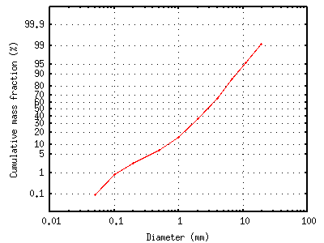
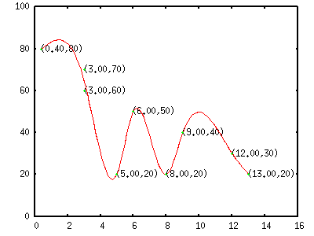

- not so Frequently Asked Questions -
update 2004/9/5
|
|
- not so Frequently Asked Questions - update 2004/9/5
|
|
not so FAQ
|
About 2-Dimensional Plot (No.7) Display a graph with normal probability axis. from Dr. Moriyama. Thanks !
In a field of powder or aerosol engineering, they often plot the size distribution of particles. It often shows a "log normal distribution", which becomes a straight line on the "normal probability"(fraction) vs log(size) plot, and so called "normal probability axis" is used. With two built-in functions - the normal distribution norm() and the inverse normal distribution invnorm() - of Gnuplot one can draw the normal probability axis. The following script shows how to make "normal probability axis" for y. Other modified scales can be made in the same way.
gnuplot> set ytics ("0.1" invnorm(0.001),"1" invnorm(0.01),"5" invnorm(0.05),\
> "10" invnorm(0.1),"20" invnorm(0.2),"30" invnorm(0.3),\
> "40" invnorm(0.4),"50" invnorm(0.5),"60" invnorm(0.6),\
> "70" invnorm(0.7),"80" invnorm(0.8),"90" invnorm(0.9),\
> "95" invnorm(0.95),"99" invnorm(0.99),"99.9" invnorm(0.999))
gnuplot> set yrange [invnorm(0.0001):invnorm(0.9999)]
gnuplot> set ylabel "Cumulative mass fraction (%)"
gnuplot> set xlabel "Diameter (mm)"
gnuplot> set logscale x
gnuplot> set grid
gnuplot> plot "sample.dat" using 1:(invnorm($2)) notitle w lp

In this example the X-axis is in the log-scale since the log-normal distribution is assumed for the data. How can I print values at each datapoint ? from Jon, Thanks !
Sometimes it is helpful if values of the points are shown numerically near those points. However gnuplot cannot treat the values in a data file as a text, we have to read those numbers with some program, and show them by set label . Suppose we have the following data, those data are shown by points, and we print those values near the points. 0.40 80 3.00 70 3.00 60 6.00 50 9.00 40 12.00 30 13.00 20 5.00 20 8.00 20 Since we cannot make it with gnuplot alone, here we generate the label commands with Perl. Gnuplot needs the next lines. gnuplot> set label "(0.4,80)" at 0.4,80 gnuplot> set label "(3.0,70)" at 3.0,70 Those lines can be generated as: % perl -ane 'print "set label \"($F[0],$F[1])\" at $F[0],$F[1]\n"' file.dat > label.plt Now we read those gnuplot commands at plotting, the numerical values are shown at each point. gnuplot> load "label.plt" gnuplot> plot 'file.dat' u 1:2 smooth csp with lines ,\ > 'file.dat' u 1:2 w points |